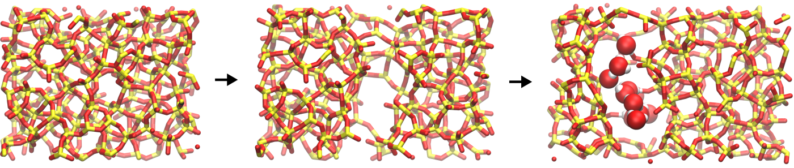

CO2 diffusion in a polymer
Creation of a LAMMPS system using ATB's molecule structure
 Figure: From left to right, amorphous silica, amorphous silica with crack, cracked amorphous silica with adsorbed water molecule. Silicon (Si) and oxygen (O) atoms of the silica are in yellow and red, respectively, and represented at a network of bonds. Oxygen (O) and hydrogen (O) atoms of the water molecules are in red and white, respectively, and represented at spheres.
The objective of this tutorial is to build a LAMMPS structure from molecules downloaded from the ATB repository. There are three main parts to this tutorial:
- System generation - First, amorphous silica is generated by temperature annealing.
- Cracking - Seconds, the silica is deformed by dilatation of the box until a crack forms.
- Adding water - And third, the system is equilibrated with a water reservoir of given chemical potential using grand canonical Monte Carlo.
Support the creation of material for LAMMPS by subscribing to my youtube channel, or becoming a patreon for 1 euro/month.
If you are new to LAMMPS, I recommend you to follow this simpler tutorial first. If you have any suggestion about these tutorials, please contact me by email at simon.gravelle at live.fr.
Download the files from the ATB
We first need to download the molecule stuctures and force field information from the atb. Go to the ATB repository website, and first look for the CO2 molecules with ID.Going further
This tutorial is already quite complicated, but if you want to go further, there are several interesting things that can be done with this system:
Relative humidity. You can link the imposed chemical potential with the value of relative humidity (RH). For that, you have to calibrate your simulation by measuring the equilibrium amount of water in an empty box for varying imposed chemical potential, see one of my paper for example.
Isotherm. You can perform a full adsorption isotherm by varying the chemical potential and extracting the equilibrium water content as a function of the imposed RH. Isotherms can be compared to experimental data, and are used sometimes to calibrate force field as it contains a lot of information about the fluid-solid interactions.
Isosteric heat of adsorption. Using the GCMC procedure, you can measure the heat of adsorption by measuring the fluctuations in water molecule and total energy of the system.
Hybrid MD/GCMC. In the grand canonical ensemble, the volume of the box is fixed, so its not possible to capture the swelling of a material with its water content (most material swells with water, like sponges). If you want to model the swelling while also performing a GCMC adsorption simulation, you can alternate between GCMC steps and molecular dynamics steps in the NPT ensemble. This method is called hybrid MD/GCMC.
Support the creation of material for LAMMPS by subscribing to my youtube channel, or becoming a patreon for 1 euro/month.